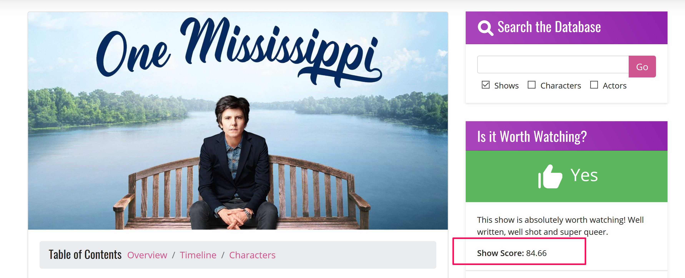
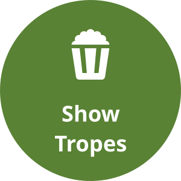
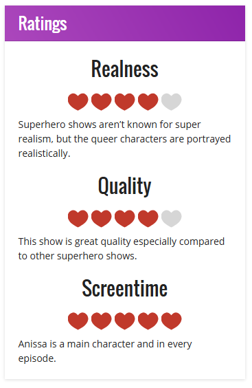
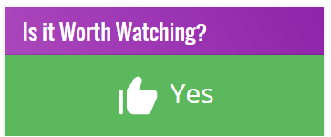
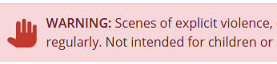

LezWatch.TV Show Scoring
Show scoring and how scores are generated explained
Show Scores
A mathematically generated score from 0-100 to identify shows that are ‘better’ for queer audiences than others.
Show Scores

One Mississippi
How are Scores Generated?
Four subject areas
Each can earn 0 - 100 points
- 0 - 100 points
- 0 - 100 points
- 0 - 100 points
-  0 - 100 points
Example with points
- 50 points
- 60 points
- 70 points
- 80 points
Add up the points
- 50 points
- 60 points
- 70 points
- 80 points
Total number of points: 260
Divide the total number by 4
- 50 points
- 60 points
- 70 points
- 80 points
260 ÷ 4 = 65
Final Score
- 50 points
- 60 points
- 70 points
- 80 points
The Final Score is 65
How Points are Earned
Ratings
Ratings
- Heart Ratings

- Worth Watching

Stars
- Trigger Warnings

Show we Love